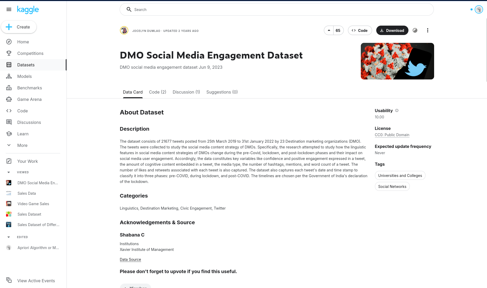
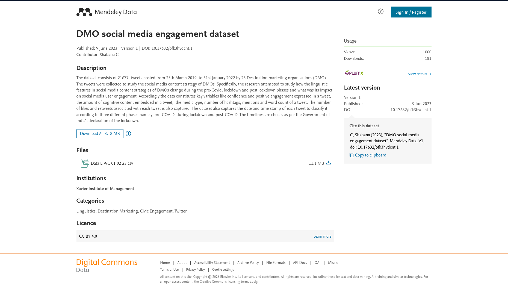
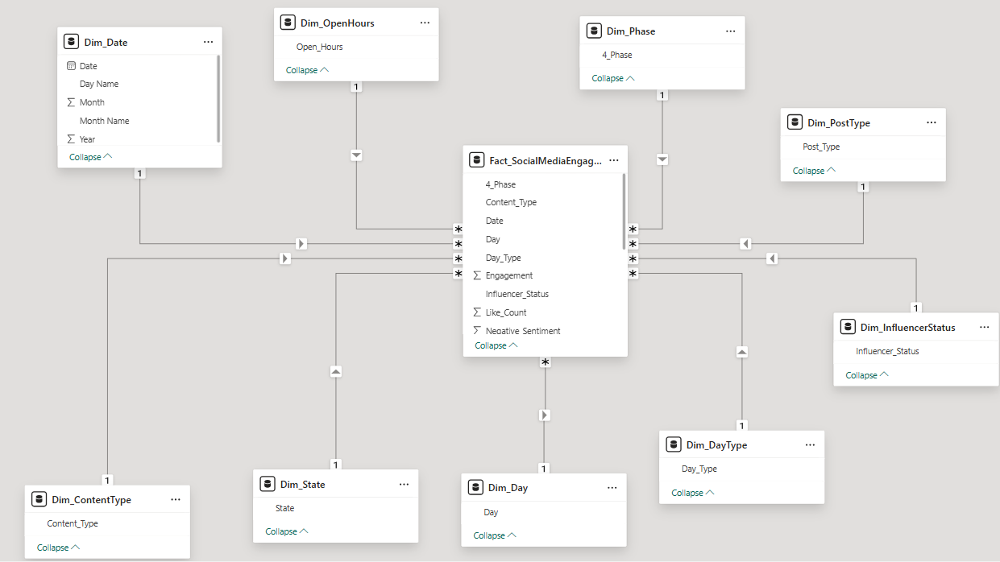

Social Media Sentiment BI Analytics
Problem Statement
Social media platforms like Twitter are widely used by organizations to engage with audiences. However, it is often unclear which factors such as content type, posting time, sentiment, or audience size drive higher engagement (likes, replies, and retweets). This project analyzes a dataset of tweets from Destination Marketing Organizations to identify patterns and factors that influence social media engagement.
Business Questions
- Influencer Impact: How does influencer status affect tweet engagement?
- Content Performance: Which post type generates the highest engagement?
- Phase Shifts: How did engagement patterns change across different phases (pre-COVID, lockdown, post-COVID)?
- Peak Activity: Which day of the week and hour has more engagement across different phases?
- Geography & Influence: Which state has the influencers with the highest number of followers on average?
- Sentiment Analysis: Which influencer type has the most negative/positive sentiments?
- Behavioral Patterns: What post types do different influencers post?
- Regional Engagement: Which states have the highest post engagement?
- Length vs. Impact: Does word count (WC) influence engagement levels?
- Verbosity vs. Impact: Does verbosity influence engagement levels?
- Timeline Trends: How do engagement levels change over time?
Visuals
Slicers
- Day
- Open_Hours
- Phase (4_Phase)
- Post_Type
- Content_Type
- Influencer_Status
- Verbosity
Graphs
-
Influencer & Sentiment Deep-Dive
-
Influencer Engagement (Radar Chart): Disaggregated by Phase.
-
Influencer Engagement (Bar Chart): Disaggregated by Verbosity.
-
Influencer Sentiment (Waterfall Chart): Positive vs. Negative sentiments by influencer type.
-
Follower Density (Bar Chart): Top N states with highest average influencer followers.
-
Influencer Behavior (Radar Chart): Post type distribution per influencer.
-
-
Content & Performance Metrics
-
Type Performance (Column Chart): Disaggregated by Content_Type.
-
Word Count Analysis (Scatter Plot): Engagement vs. Word Count (WC).
-
Verbosity Impact (Combo Line & Bar Chart): Engagement levels across verbosity categories.
-
Regional Performance (Bar Chart): Top N states by post engagement.
-
-
Temporal & Phase Analysis
-
Phase Distribution (Box Plot): Engagement patterns across pre-COVID, lockdown, and post-COVID.
-
Engagement Hotspots (Heatmap):
X-axis: Phase Y-axis: Day + Open_Hours Values: Engagement -
Trend Timeline (Line Chart): Engagement levels over Date.
-
Data Sources
Dataset: DMO Social Media Engagement Dataset
Source: Kaggle
Accessed via Kaggle: https://www.kaggle.com/datasets/jocelyndumlao/dmo-social-media-engagement-dataset

Primary Source: https://data.mendeley.com/datasets/bfk3hvdcnt/1

This dataset contains 21,677 tweets collected from 23 Destination Marketing Organizations (DMOs) between March 25, 2019 and January 31, 2022. It was created to study how social media content strategies and linguistic features affect user engagement on Twitter.
Data Model Description
The project uses a star schema data model designed to analyze social media engagement. In this model, a central fact table stores engagement metrics for tweets, while several dimension tables provide contextual information such as time, content type, influencer status, and posting characteristics.
Tables in the Data Model
The model consists of one fact table and several dimension tables:
Fact_SocialMediaEngagement – Contains the main quantitative metrics such as engagement counts, follower counts, sentiment scores, and linguistic features. - Dim_Date - Stores date-related attributes used for time-based analysis. - Dim_State - Represents the geographic location associated with each tweet. - Dim_PostType - Contains the different types of posts (Photo, Video, Text, Link, Poll). - Dim_ContentType - Describes the category of content shared in the tweet. - Dim_Phase - Represents the campaign or timeline phase of the post. - Dim_OpenHours - Indicates whether a tweet was posted during working or non-working hours. - Dim_Day - Identifies the day of the week. - Dim_DayType - Distinguishes between weekdays and weekends. - Dim_InfluencerStatus - Indicates whether the account is classified as an influencer.
These dimension tables provide descriptive context that allows engagement metrics in the fact table to be analyzed across different categories such as time, content type, and posting characteristics.
Data Model Diagram

DAX Measures
Overview
We developed a total of 21 DAX measures to support the business questions. Measures are organized by functional category and stored in a dedicated _Measures table for clean model organization.
Complete Measures List
| # | Measure Name | Category | Description |
|---|---|---|---|
| 1 | Total Posts |
Aggregation | Count of all published posts |
| 2 | Total Likes |
Aggregation | Sum of all likes received |
| 3 | Total Retweets |
Aggregation | Sum of all retweets/shares |
| 4 | Total Engagement |
Aggregation | Sum of all engagement actions (likes + retweets + replies + quotes) |
| 5 | Avg Engagement per Post |
Aggregation | Average engagement per post |
| 6 | Avg Engagement by Post Type |
Aggregation | Average engagement grouped by content format |
| 7 | Avg Engagement by Day |
Aggregation | Average engagement grouped by day of week |
| 8 | Avg Positive Sentiment |
Aggregation | Average positive sentiment score |
| 9 | Avg Negative Sentiment |
Aggregation | Average negative sentiment score |
| 10 | Engagement YTD |
Time Intelligence | Year-to-date total engagement |
| 11 | Engagement MTD |
Time Intelligence | Month-to-date total engagement |
| 12 | Engagement YoY % Change |
Percentage Change | Year-over-year growth rate |
| 13 | Engagement QoQ % Change |
Percentage Change | Quarter-over-quarter growth rate |
| 14 | Engagement Growth Trend |
KPI | Change in growth rate (acceleration/deceleration) |
| 15 | Engagement Rate |
KPI | Engagement per 1,000 followers |
| 16 | Net Sentiment Score |
KPI | Positive minus negative sentiment balance |
| 17 | State Engagement Rank |
Ranking | State ranking by total engagement (1 = highest) |
| 18 | Post Type Share of Engagement |
Advanced | Percentage of total engagement by post type |
| 19 | Top Post Type |
Advanced | Highest-performing content format |
| 20 | High Sentiment Engagement |
Advanced | Avg engagement for above-average sentiment posts |
| 21 | Low Sentiment Engagement |
Advanced | Avg engagement for below-average sentiment posts |
Complex Measure Explanations
Three advanced measures are highlighted below to demonstrate DAX proficiency and business logic implementation.
1. Top Post Type
Business Question: Which content format drives the most engagement?
What it does:
Identifies the single highest-performing content format (image, video, link, or text) based on total engagement.
How it works:
The measure creates a virtual table grouping posts by type with their total engagement, selects the top performer, and returns it as readable text.
Functions Used: VAR, TOPN, SUMMARIZE, CONCATENATEX
Key Techniques:
Unlike a simple MAXX which only returns a number, this measure returns the actual category name (e.g., "Video") in a stakeholder-friendly format. It demonstrates the ability to combine multiple DAX functions to produce dynamic, readable outputs.
Business Value:
Directly answers "What type of content should we create more of?" Enables data-driven content strategy and resource allocation.
2. Post Type Share of Engagement
Business Question: What percentage of total engagement does each content format contribute?
What it does:
Calculates the percentage contribution of each content type to total engagement.
How it works:
The measure first calculates total engagement across all post types (ignoring any filters), then divides the current post type's engagement by that total.
Functions Used: CALCULATE, ALL, DIVIDE
Key Techniques:
Demonstrates the essential CALCULATE + ALL pattern required for percentage-of-total calculations. This pattern is fundamental to portfolio analysis and is widely used in enterprise BI solutions.
Business Value:
Reveals engagement concentration—for example, if videos drive 60% of engagement but only represent 20% of posts. Helps balance content strategy and identify over-reliance on specific formats.
3. Low Sentiment Engagement
Business Question: Does below-average positive sentiment hurt engagement performance?
What it does:
Measures average engagement specifically for posts with below-average positive sentiment.
How it works:
The measure dynamically determines the average positive sentiment score, then filters the fact table to include only posts scoring at or below that threshold, finally calculating average engagement for this subset.
Functions Used: CALCULATE, FILTER
Key Techniques:
Uses the CALCULATE + FILTER pattern to enable dynamic conditional analysis. When paired with High Sentiment Engagement (which filters for above-average sentiment), it creates a true A/B test comparing performance across sentiment groups.
Business Value:
Answers the critical question "Does positive content actually drive higher engagement?" Quantifies the ROI of maintaining positive brand tone and provides data-backed justification for content guidelines.
Contributors:
Vivian Kipsang -
Misati Nyambane-
Trizah Nzioka-
Samantha Masaki-
Levin Ekuam-
Ilham Mohammed-